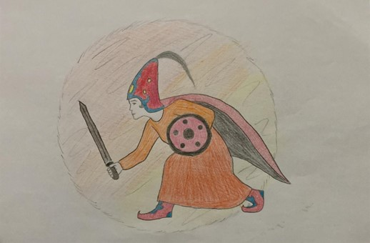

Ben, Banu Çiçek… Pay Piçen Big’in kızı, Deli Karçar’ın kız kardeşiyim. Daha doğmadan Kam Püre Big’in müstakbel oğluyla Bamsı Beyrek’le beşik kertmesi yapılmışım. Beşik kertmemle ilk defa 15 yaşından sonra karşılaştım. Geyik sürerek yanımdaki kırk kızımla birlikte kurduğumuz çadırın önüne gelen Beyrek, beni görmek istediğinde kendimi ona bir dadı olarak tanıttım. Eğer Banu Çiçek’le görüşmek istiyorsa beni at yarışı, ok atma ve güreşte yenmesi gerektiğini söyledim. Ok atma ve at yarışında beni yenen Beyrek, güreşte zorlanınca bana hile yaptı ve beni gocundurdu, utandırdı. Ardından da belimi kavrayıp beni sırt üstü yere yıktı. Ben kendimi tanıtınca beni sevdi, parmağıma nişan yüzüğü taktı. Bana pek çok yiğit talip oldu fakat ağabeyim Deli Karçar, beni istemeye gelen yiğitlerin hepsini öldürdü. Beni Bamsı Beyrek için istemeye gelen Dede Korkut’u da öldürmeye kalktı. Dede Korkut beddua etti ve ağabeyimin kılıç tutan eli havada asılı kaldı. Ağabeyim elini eski haline getirmesi karşılığında beni Bamsı Beyrek’e vermeye razı oldu. Başlık olarak da bin pire, bin kuyruksuz kulaksız köpek gibi tuhaf şeyleri istedi. Tam evleneceğimiz gün Beyrek, babam vaktiyle beni kendisine vadettiği Bayburt Hisarı’nın beyinin askerleri tarafından yakalanıp götürüldü. Yalancı oğlu Yaltacuk, Beyrek’in vaktiyle kendisine verdiği gömleği kana bulayıp Beyrek’in öldüğü haberini getirdi. Ağabeyim, beni Beyrek’in öldüğü haberini getirene vereceğini söylemişti. Böylece hiç istemediğim halde Yalancı oğlu Beyrekle evlenecek idim. Beyrek, tutsaklıktan tam on altı yıl sonra kurtulup bir deli çoban kılığında obamıza çıkıp geldi. Bu sırada Yalançı oğlu Yaltacuk ile benim büyük düğünüm yapılıyordu. Ozan kılığındaki Beyrek, benim on altı yıl boyunca kendisinin yolunu gözlediğimi, onu hiçbir zaman unutmadığımı, kendisi için yıllarca yas tutup ağladığımı anladı. Yalancı oğlu Yaltacuk’u bağışlayan Beyrek kâfir beyinin hisarında kendisiyle birlikte tutsak edilen adamlarını kurtardı. Ardından da Bamsı Beyrek’le evlendim. İçinde yer aldığım Dede Korkut Kitabı anlatmasında önce alp kadın kimliğine sahiptim.
